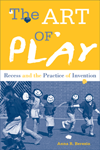
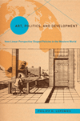
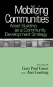
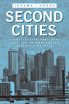

|
Accessible Citizenships
Disability, Nation, and the Cultural Politics of Greater Mexico
Minich, Julie Avril
How disability provides a new perspective on our understanding of the nation and the citizen
240 pp • 5.5x8.5 • Fall 2013
paper 978-1-4399-1070-2
cloth 978-1-4399-1069-6
|
|
The Archival Turn in Feminism
Outrage in Order
Eichhorn, Kate
A window into the preservation of contemporary feminist documents and artifacts and how this archival activism has advanced intergenerational political alliances
208 pp • 5.5x8.5 • Fall 2013
cloth 978-1-4399-0951-5 |
 |
The Art of Play
Recess and the Practice of Invention
Beresin, Anna R.
Play and recess seen from the eyes of children
202 pp • 6x9 • Fall 2013
paper 978-1-4399-1094-8
cloth 978-1-4399-1093-1 |
 |
Art, Politics, and Development
How Linear Perspective Shaped Policies in the Western World
Lepenies, Philipp H.
A brilliant meditation on how the invention of linear perspective in art helped shape our perspectives on the developing world
214 pp • 6x9 • Fall 2013
cloth 978-1-4399-1084-9 |
|
Asian American Women's Popular Literature
Feminizing Genres and Neoliberal Belonging
Thoma, Pamela
How Asian American women writers mobilize popular genres of literature to imagine new forms of citizenship in a neoliberal society
232 pp • 6x9 • Fall 2013
paper 978-1-4399-1019-1
cloth 978-1-4399-1018-4 |
|
Atlanta Unbound
Enabling Sprawl through Policy and Planning
Basmajian, Carlton Wade
How metropolitan Atlanta's regional planning groups accelerated the sprawl they were trying to control
288 pp • 7x10 • Fall 2013
cloth 978-1-4399-0939-3 |
|
Constructing Muslims in France
Discourse, Public Identity, and the Politics of Citizenship
Fredette, Jennifer
A groundbreaking study that presents Muslims in France as a diverse social group rather than a monolithic religious group
222 pp • 6x9 • Fall 2013
paper 978-1-4399-1029-0
cloth 978-1-4399-1028-3 |
|
Consuming Work
Youth Labor in America
Besen-Cassino, Yasemin
The social meaning of work from youths' perspectives
202 pp • 6x9 • Fall 2013
paper 978-1-4399-0949-2
cloth 978-1-4399-0948-5 |
|
Ethnographies of Youth and Temporality
Time Objectified
edited by Dalsgård, Anne Line, Martin Demant Frederiksen, Susanne Højlund and Lotte Meinert
Afterword by Michael Flaherty
How time is often a troubling and external factor in the lives of youth
206 pp • 6x9 • Fall 2013
cloth 978-1-4399-1066-5 |
|
Family and Work in Everyday Ethnography
edited by Brown, Tamara Mose and Joanna Dreby
Negotiating the challenges—and fighting the myths—of parenthood and fieldwork
228 pp • 5.5x8.25 • Fall 2013
paper 978-1-4399-1076-4
cloth 978-1-4399-1075-7 |
|
God Talk
Experimenting with the Religious Causes of Public Opinion
Djupe, Paul A. and Brian R. Calfano
Explores religion's impact on political attitudes using a series of controlled experiments
276 pp • 6x9 • Fall 2013
paper 978-1-4399-0866-2
cloth 978-1-4399-0865-5 |
|
How We Die Now
Intimacy and the Work of Dying
Erickson, Karla A.
Insights from elders and their caregivers on the end of life
208 pp • 5.5x8.25 • Fall 2013
paper 978-1-4399-0824-2
cloth 978-1-4399-0823-5 |
|
Jesus, Jobs, and Justice
African American Women and Religion
Collier-Thomas, Bettye
Now in paperback, an extraordinary history of African American women, and their struggle for gender and racial equality in the church and society
Now in Paperback!
736 pp • 6.25x9.125 • Fall 2013
paper 978-1-4399-1105-1 |
 |
Mobilizing Communities
Asset Building as a Community Development Strategy
edited by Green, Gary Paul and Ann Goetting
Case studies from a variety of settings consider the asset-building approach to community development
New in Paperback!
204 pp • 5.5x8.25 • Fall 2013
paper 978-1-4399-0087-1 |
|
Never Easy, Never Pretty
A Fan, A City, A Championship Season
Smith, Dean Bartoli
The story of the Baltimore Ravens, 2012 Super Bowl Champions, as told through the cultural lens of a city with a rich football history
224 pp • 6x9 • Fall 2013
cloth 978-1-4399-1106-8 |

|
Philadelphia Freedoms
Black American Trauma, Memory, and Culture after King
Awkward, Michael
Tracing racial trauma through Philadelphia sports and cultural production in the four decades after King's assassination
264 pp • 6x9 • Fall 2013
paper 978-1-4399-0709-2
cloth 978-1-4399-0708-5 |
|
Pushing Back the Gates
Neighborhood Perspectives on University-Driven Revitalization in West Philadelphia
Etienne, Harley F.
A critical study of university-driven development from the neighborhood resident's perspective
New in Paperback!
192 pp • 5.5x8.25 • Fall 2013
paper 978-1-4399-0069-7 |
|
The Risk Society Revisited
Social Theory and Governance
Rosa, Eugene A., Ortwin Renn and Aaron M. McCright
How risk is a feature in all societies, and its connection to the challenges of sustainability
264 pp • 6x9 • Fall 2013
cloth 978-1-4399-0258-5 |
|
Salsa World
A Global Dance in Local Contexts
edited by Hutchinson, Sydney
How an understanding of salsa dancing enhances our appreciation of salsa's global reach and meanings
240 pp • 6x9 • Fall 2013
cloth 978-1-4399-1006-1 |
|
Savage Portrayals
Race, Media, and the Central Park Jogger Story
Byfield, Natalie P.
How the media's racialized coverage of the Central Park Jogger case influenced the conviction of five young minority men accused of "wilding" and affected the American juvenile justice system
242 pp • 6x9 • Fall 2013
paper 978-1-4399-0634-7
cloth 978-1-4399-0633-0 |
 |
Second Cities
Globalization and Local Politics in Manchester and Philadelphia
Hodos, Jerome I.
How Philadelphia and Manchester have successfully grappled with globalization, carving out a series of distinctive niche roles for themselves over time
New in Paperback!
264 pp • 6x9 • Fall 2013
paper 978-1-4399-0232-5 |
|
Serial Fu Manchu
The Chinese Supervillain and the Spread of Yellow Peril Ideology
Mayer, Ruth
How mass media serials featuring Fu Manchu reinforced the cultural notion of the Yellow Peril
216 pp • 6x9 • Fall 2013
paper 978-1-4399-1056-6
cloth 978-1-4399-1055-9 |
|
Transnationalizing Viet Nam
Community, Culture, and Politics in the Diaspora
Valverde, Kieu-Linh Caroline
Tracing the ties that connect diasporic Vietnamese to each other and to their homeland
New in Paperback!
198 pp • 6x9 • Fall 2013
paper 978-1-4399-0680-4 |
Click here
to download the catalog (pdf). |